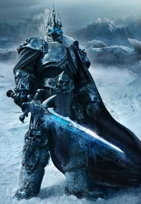

The beings that serve as patrons for warlocks are mighty inhabitants of other planes of existence— not gods, but almost godlike in their power. Various patrons give their warlocks access to different powers and invocations, and expect significant favors in return.
Some patrons collect warlocks, doling out mystic knowledge relatively freely or boasting of their ability to bind mortals to their will. Other patrons bestow their power only grudgingly, and might make a pact with only one warlock. Warlocks who serve the same patron might view each other as allies, siblings, or rivals.
| Patron | 1st level | 6th level | 10th level | 14th level |
| The Archfey | Fey Presence | Misty Escape | Beguiling Defenses | Dark Delirium |
| The Archlich | Blessing of the Archlich | Control Undeath | Necrotic Resilience | Undead Commander |
| The Astral Dragon | Hoard Sense | Astral Screech | Astral Mind | Psychic Storm |
| The Celestial | Bonus Cantrips, Healing Lights | Radiant Soul | Celestial Resilience | Searing Vengeance |
| The Cosmic Machine | Advanced Targeting System | Advanced Protocol System | Advanced Integration System | Advanced Override System |
| The Coven | One of the Fold | Shared Pain | Supreme Clarity | Call of the Coven |
| The Crone | Witch's Cackle | Blood Magic | Walking Hovel, Flying Broom | Witch's Transformation |
| The Elder Brain | Mind Flayer Baptism | Psychic Adept | Mind Blast | Disciple of the Elder Brain |
| The Fiend | Dark One's Blessing | Dark One's Own Luck | Fiendish Resilience | Hurl Through Hell |
| The Future Self | It Happened Like This | I Could Do With Fewer Scars | Expect an Ambush | Grandfather Paradox |
| The Ghost in the Machine | Bonus Proficiencies, Information Surge | Wire Walk | Personal Encryption | Technovirus |
| The Great Old One | Awakened Mind | Entropic Ward | Thought Shield | Create Thrall |
| The Hexblade | Hexblade's Curse, Hex Warrior | Accursed Specter | Armor of Hexes | Master of Hexes |
| The Keeper of the Depths | Secrets of the Depths | Strange Aeons | Madness of the Deep | Consumption of Mind and Soul |
| The Legion of Spirits | Spirit Barrage | Haunt | Spirit Walk | Ethereal Legion |
| The Library | Library Card | Background Check | Know Your Enemy | Limitless |
| The Raven Queen | Sentinel Raven | Soul of the Raven | Raven's Shield | Queen's Right Hand |
| The Seeker | Shielding Aurora | Astral Refuge | Far Wanderer | Astral Sequestration |
| The Shadowman | Unformed Beasts | Voodoo Doll | Unformed Land | Shadowman's Chosen |
| The Undying | Among the Dead | Defy Death | Undying Nature | Indestructible Life |
Your patron is a lord or lady of the fey, a creature of legend who holds secrets that were forgotten before the mortal races were born. This being's motivations are often inscrutable, and sometimes whimsical, and might involve a striving for greater magical power or the settling of age-old grudges. Beings of this sort include the Prince of Frost; the Queen of Air and Darkness, ruler of the Gloaming Court; Titania of the Summer Court; her consort Oberon, the Green Lord; Hyrsam, the Prince of Fools; and ancient hags.
The Archfey lets you choose from an expanded list of spells when you learn a warlock spell. The following spells are added to the warlock spell list for you.
Starting at 1st level, your patron bestows upon you the ability to project the beguiling and fearsome presence of the fey. As an action, you can cause each creature in a 10-foot cube originating from you to make a Wisdom saving throw against your warlock spell save DC. The creatures that fail their saving throws are all charmed or frightened by you (your choice) until the end of your next turn.
Once you use this feature, you can't use it again until you finish a short or long rest.
Starting at 6th level, you can vanish in a puff of mist in response to harm. When you take damage, you can use your reaction to turn invisible and teleport up to 60 feet to an unoccupied space you can see. You remain invisible until the start of your next turn or until you attack or cast a spell.
Beginning at 10th level, your patron teaches you how to turn the mind-affecting magic of your enemies against them. You are immune to being charmed, and when another creature attempts to charm you, you can use your reaction to attempt to turn the charm back on that creature. The creature must succeed on a Wisdom saving throw against your warlock spell save DC or be charmed by you for 1 minute or until the creature takes any damage.
Starting at 14th level, you can plunge a creature into an illusory realm. As an action, choose a creature that you can see within 60 feet of you. It must make a Wisdom saving throw against your warlock spell save DC. On a failed save, it is charmed or frightened by you (your choice) for 1 minute or until your concentration is broken (as if you are concentrating on a spell). This effect ends early if the creature takes any damage.
Until this illusion ends, the creature thinks it is lost in a misty realm, the appearance of which you choose. The creature can see and hear only itself, you, and the illusion.
You must finish a short or long rest before you can use this feature again.
Your patron is an archlich, a particularly powerful lich that may have been neutral or good during life. This being's motivations include immortality, mastery of death and undeath, and the acquisition of any kind of knowledge you or it can access. Entities of this type include Lady Alanthene Moonstar of Waterdeep, Rhaudilath the Ageless, Ezzat the Archlich, Lady Saharel, and Renwick Caradoon. In extremely specific cases, Vecna can be patron to such warlocks as well.
The Archlich lets you choose from an expanded spell list when you learn a warlock spell. The following spells are added to the warlock spell list for you.
Starting at 1st level, you gain the ability to transfer life force from your enemies to yourself. Once per turn when you kill one or more creatures with a cantrip, you gain temporary hit points equal to the Overkill damage dealt. You can do this a number of times equal to your warlock level per short rest.
At 6th level when you cast Animate Dead, you can target one additional corpse or pile of bones to create an additional zombie or skeleton. Whenever you create an undead with Animate Dead it has these additional benefits:
Beginning at 10th level, you have resistance to necrotic damage.Additionally, once per turn you gain the ability to heal yourself for half the necrotic damage you take (accounting for your resistance, this will equal a quarter of the necrotic damage originally dealt).
Starting at 14th level, you can use magic to bring undead under your control, even those summoned or created by other people. As an action, you can choose one undead that you can see within 60 feet of you. That creature must make a Charisma saving throw against your warlock spell save DC. If it succeeds, you can't use this feature on it again. If it fails, it becomes friendly to you and obeys your command until you use this feature again.
Intelligent undead are harder to control in this way. If the target has an Intelligence of 12 or higher, it can repeat the saving throw at the end of every hour until it succeeds and breaks free.